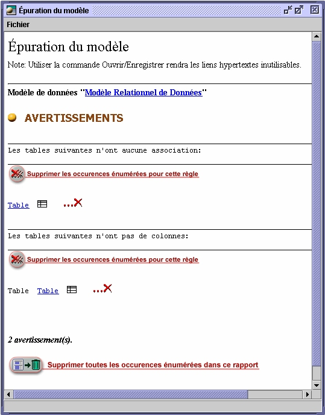

Epurer
un modèle

Pendant
le processus créatif et itératif de modélisation,
des éléments du modèle pourraient être
créés
s'ils ne sont plus nécessaires une fois le modèle
achevé.
Open ModelSphere offre une fonction d'épuration pour trouver et
effacer
ces éléments.
En
utilisant l'option d'épuration, une nouvelle fenêtre
apparaîtra
pour vous énumérer les occurences du modèle qui ne
répondent pas aux critères de cohérence et aussi
les
liens vers ceux-ci dans la fenêtre Explorateur et les diverses
fenêtres
de propriétés.
La
fonction n'épuration est disponible pour les modèles
de
processus, de données, d'items communs ainsi que pour les
bibliothèques d'opérations.
Pour
utiliser la fonction Epurer le modèle :
- Sélectionner
le modèle ou un diagramme de ce modèle dans
l'explorateur.
(il est à noter que l'opération est effectuée sur
le modèle et non sur un seul diagramme sélectionné)
- Du menu
Outils, sélectionnez Épurer le modèle .
La fenêtre suivante apparaîtra :

L'épuration
peut être faite de trois façons :
- sur
une occurence en particulier via l'icône
 .
.
- sur
l'ensemble des occurences lié à une règle
particulière.
- sur
toutes les occurences énumérées dans le rapport.
Vous
pouvez faire également effectuer les changements à partir
de la fenêtre de propriétés de chaque objet;
utiliser
le lien  .
.
Règles
utilisées dans l'épuration
Modèle
de données et de domaines
- Une
table doit avoir au moins un colonne (avertissement).
- Une
table doit être liée à au moins une autre table
(avertissement).
- Une
clé primaire/unique doit s'appliquer à une colonne ou une
dépendence.
- Une
clé étrangère doit s'appliquer à une
colonne.
- Un
index doit avoir au moins un élément indexé (une
colonne).
- Un
déclencheur doit avoir un corps d'instructions être
défini
sur une colonne
- Une
contrainte doit s'appliquer à une colonne
- Un
domaine doit être lié à un type de donnée.
- Un
domaine doit être utilisé par au moins un objet.
Bibliothèque
d'opérations
- Une
procédure doit contenir des instructions (avertissement).
- Un
paramètre doit avoir un type.
Modèle
de processus
- Un
processus doit avoir une représentation graphique
(avertissement).
- Une
entité externe doit avoir une représentation graphique
(avertissement).
- Un
dépôt doit avoir une représentation graphique
(avertissement).
Modèle
d'items communs
- Un
item commun doit être lié à au moins une colonne
(avertissement).
- Un
item commundoit avoir un type.